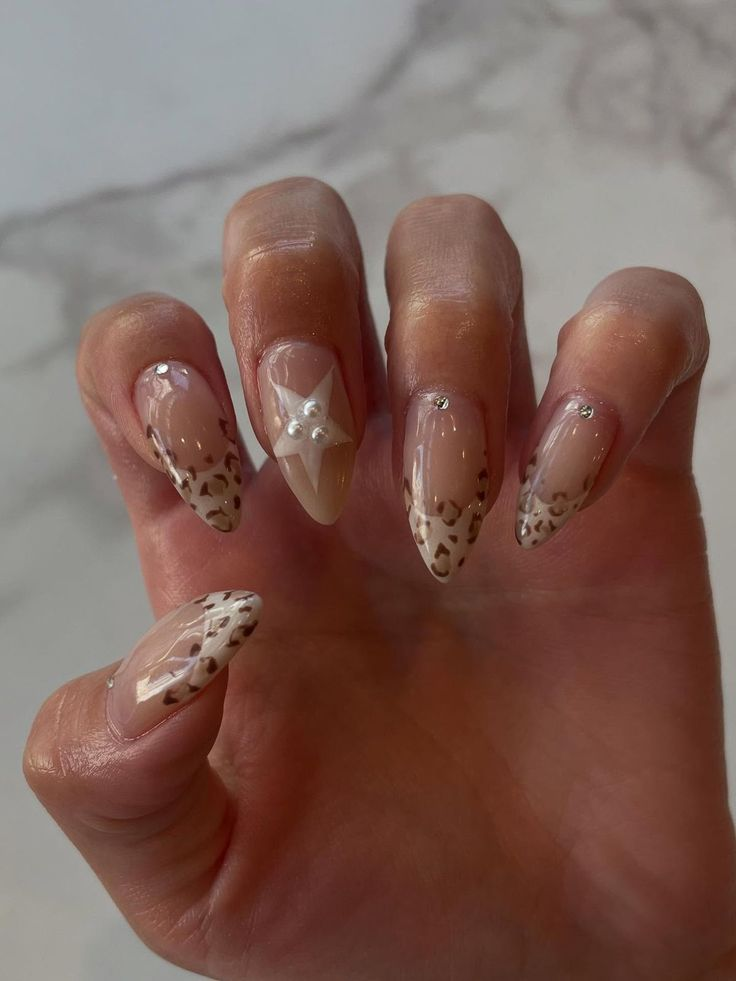
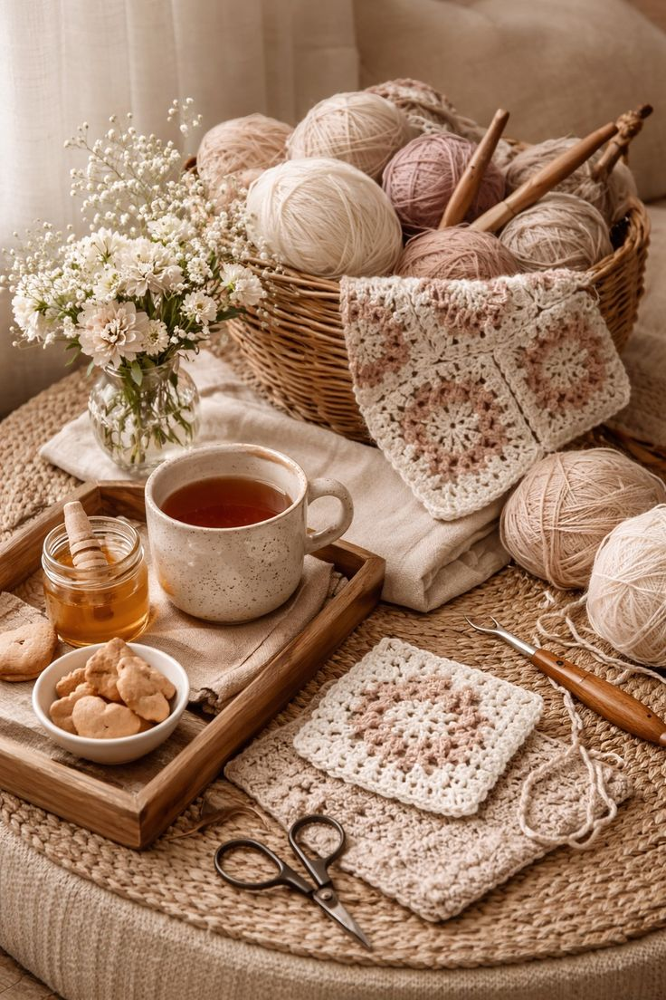

Singing
Music has always been an important part of my life, and I enjoy learning new songs and improving my vocal abilities. Singing allows me to express emotion and creativity in a way that feels very natural.
- Performance
- Theater
- Choir
Outside of academics, I enjoy spending time exploring different hobbies that allow me to be creative and relax. These hobbies give me a balance between my academic work and personal interests.
Music has always been an important part of my life, and I enjoy learning new songs and improving my vocal abilities. Singing allows me to express emotion and creativity in a way that feels very natural.

I taught myself how to design nails and create different styles and patterns. It lets me combine creativity with attention to detail while experimenting with colors, shapes, and designs.

I enjoy crocheting and trying out new crafts because each project helps me challenge myself and develop new skills. Creating something handmade is one of the most relaxing parts of my routine.